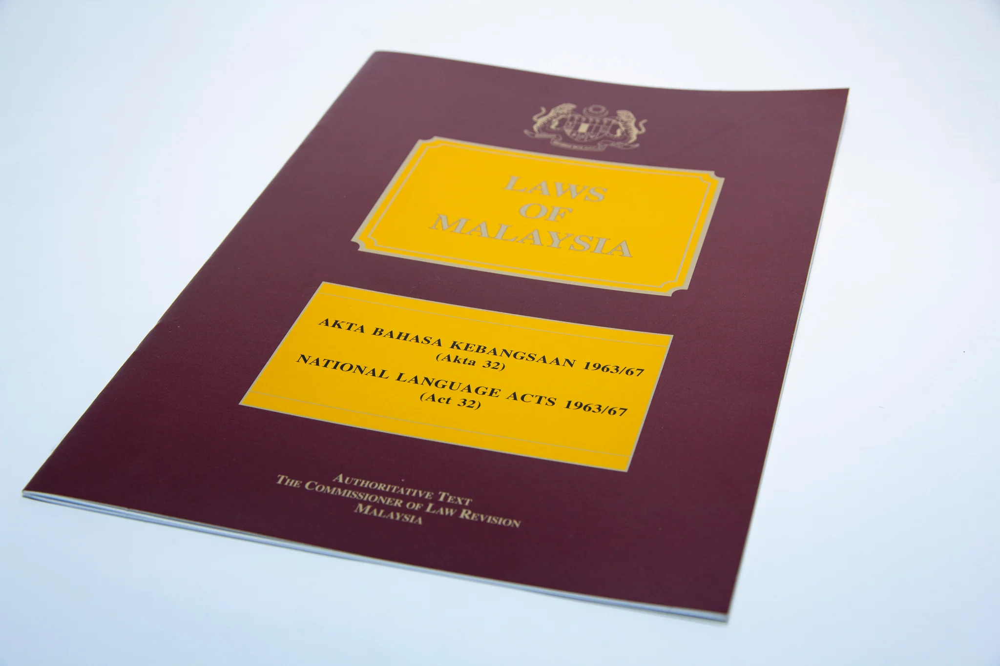

📜 Bahagian Akta

Kedudukan Bahasa Kebangsaan & Akta Dalam Perlembagaan
Jom semak akta-akta penting yang mengukuhkan kedudukan Bahasa Melayu di Malaysia bersama Tom dan Jerry!
- 1 Bahasa Melayu ialah bahasa kebangsaan dan bahasa rasmi negara kita.
- 2 Kedudukan bahasa Melayu sebagai bahasa rasmi termaktub dalam Akta Bahasa Kebangsaan 1963/67.
- 3 Kepentingan bahasa Melayu sebagai bahasa ilmu diwartakan dalam Akta Pelajaran 1961 dan Akta Pendidikan 1996.
- 4 Pada masa yang sama, masyarakat pelbagai kaum di Malaysia boleh menggunakan bahasa lain seperti bahasa Mandarin, bahasa Tamil dan bahasa Inggeris dalam komunikasi harian mereka.